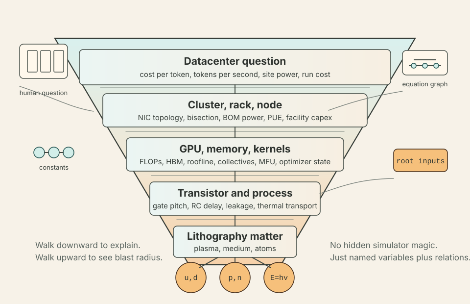

Good for now
Teaching the stack without flattening it into vibes. Auditing which numbers are constants, equations, measured values, or scenario inputs. Tracing an output from economics into infrastructure, performance, manufacturing, and physics.
gpu_stack/readme/frontdoor.txt
A symbolic map of AI training infrastructure, from datacenter economics and GPU kernels down toward the physics the numbers keep borrowing from.
Not a bounded simulator
Most training-cost talk jumps straight to a satisfying number. `gpu_stack` keeps the ancestry attached: equations, units, references, constraints, scenario assumptions, and the exact places where the graph has not decomposed reality yet.

One output, many upstream obligations. The useful part is that the obligations stay inspectable.
layers.sys
The visible machine is a building, but the model treats it as a constraint bundle: grid interconnect, substations, cooling loops, water, occupancy, capex, operations, and uptime.
CLI.exe
The package is still closer to a research instrument than a polished app. That is useful right now. Ask it what exists, what is unresolved, and where a claim bottoms out.
python -m gpu_stack.cli stats
python -m gpu_stack.cli verify --profile fast
python -m gpu_stack.cli inspect econ.cost.per_token --cone
python -m gpu_stack.cli root-debt --families --limit 5
python -m gpu_stack.cli scenario-report scenarios.dense_training_cost_fixture --jsonTeaching the stack without flattening it into vibes. Auditing which numbers are constants, equations, measured values, or scenario inputs. Tracing an output from economics into infrastructure, performance, manufacturing, and physics.
It does not solve simultaneous systems. It is not a full digital twin of a datacenter. It still contains root inputs that deserve deeper decomposition, sourcing, or an explicit scenario boundary.
next_work.exe